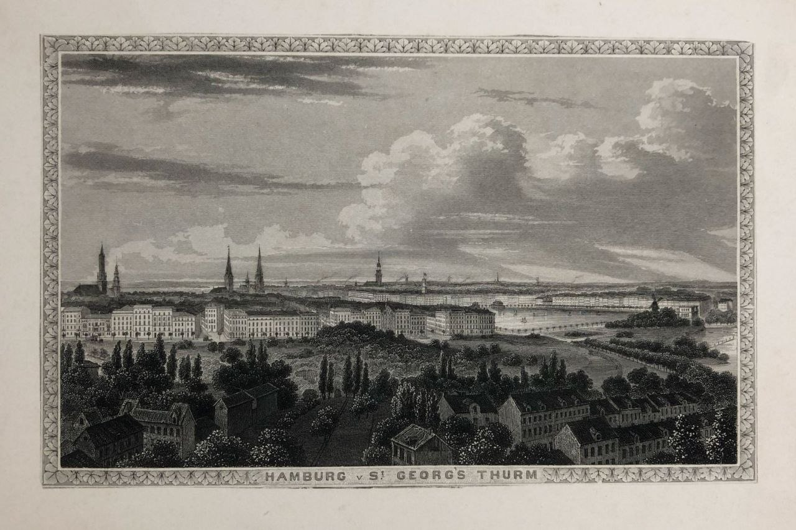

Conference Hall by the Binnenalster
Jungfernstieg / Alsterufer · 53°33′14″N 09°59′37″E
Architecture & Site History
Since the late 18th century, Jungfernstieg along the Binnenalster served as the grand promenade of merchant Hamburg—and in May 1842 became the dramatic waterfront line against the Great Fire.
On-Site Philosophical Practice
On site: Group opening evening on Day 1. On Days 2–4 our rented conference hall hosts morning conceptual lectures and evening Socratic discussions.
Key Site Artifacts:
Expedition workbook · Pre-1842 engraving of the Alster basin